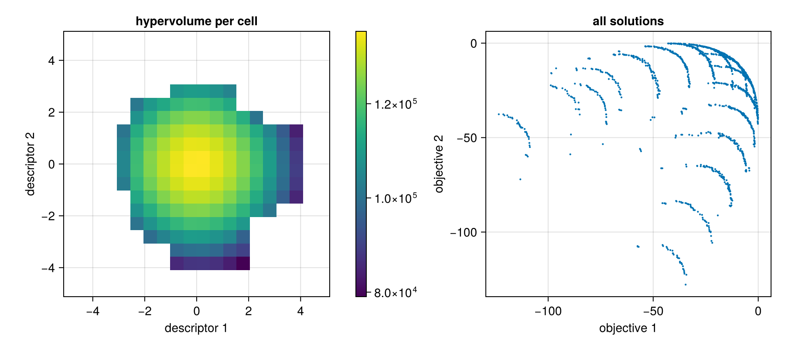

Several objectives
With several objectives there is rarely one best solution, only trade-offs: a solution is on the Pareto front if no other solution is at least as good in every objective and better in one. Multi-objective MAP-Elites (MOME; Pierrot et al.,
- keeps such a front in every cell of a grid, so the archive answers "what
are the best trade-offs for each kind of solution?".
Set up once, from the repository root:
julia --project=examples -e 'using Pkg; Pkg.develop(path="."); Pkg.instantiate()'Run:
julia --project=examples examples/mome.jlusing QualityDiversity, QualityDiversity.Benchmarks
using Random: XoshiroThe problem
BiSphere(10) has two objectives over 10 parameters, the negated squared distances to the points (1, …, 1) and (-1, …, -1). No solution is best in both. Its descriptor is that of Rastrigin: the mean of the first five and of the last five parameters.
The fitness of a multi-objective problem is a vector, here an SVector of two numbers, and all objectives are maximized.
prob = BiSphere(10)
ev = QualityDiversity.evaluate(prob, zeros(10))
ev.fitness2-element StaticArraysCore.SVector{2, Float64} with indices SOneTo(2):
-10.0
-10.0Hypervolume, the size of the region of objective space that a front dominates, is measured from a reference point below the values of interest. A problem can supply it, as BiSphere does:
QualityDiversity.reference_point(prob)2-element StaticArraysCore.SVector{2, Float64} with indices SOneTo(2):
-374.544
-374.544Running MOME
MOME builds a ParetoGridArchive, which keeps a front of at most max_front solutions in each cell, and a variation emitter that draws a parent uniformly from the front of a random occupied cell.
alg = MOME(prob; dims=(20, 20), max_front=50, batch_size=64, variation=GaussianMutation(0.2))
result = solve(prob, alg; budget=100_000, rng=Xoshiro(1))
archive = result.archiveReading the results
length counts the occupied cells and QualityDiversity.num_solutions the solutions in all fronts. The metrics of a multi-objective run differ from those of MAP-Elites: qd_score is the MOQD score, the sum of the hypervolumes of the fronts of all cells, and global_hypervolume is that of the front of all solutions together.
final = result.history[end]
(occupied_cells=length(archive), solutions=final.num_solutions, moqd_score=final.qd_score,
global_hypervolume=global_hypervolume(archive))(occupied_cells = 146, solutions = 1491, moqd_score = 1.6680794262396818e7, global_hypervolume = 139931.32893777487)QualityDiversity.elites iterates over every solution of every front, with its evaluation. QualityDiversity.max_scores gives the best value found for each objective:
QualityDiversity.max_scores(archive)2-element StaticArraysCore.SVector{2, Float64} with indices SOneTo(2):
-0.07303377350834903
-0.12021962838541067Plotting
With a Makie backend loaded, heatmap(archive) shows the hypervolume of the front in each cell. The second panel shows every solution of the archive in objective space: the fronts of the cells near the center of descriptor space reach the line between the two optima.
using CairoMakie
fig = Figure(size=(900, 400))
ax = Axis(fig[1, 1]; title="hypervolume per cell", xlabel="descriptor 1", ylabel="descriptor 2", aspect=1)
hm = heatmap!(ax, archive)
Colorbar(fig[1, 2], hm)
objectives = [ev.fitness for (_, ev) in QualityDiversity.elites(archive)]
scatter(fig[1, 3], first.(objectives), last.(objectives); markersize=3,
axis=(title="all solutions", xlabel="objective 1", ylabel="objective 2"))
fig